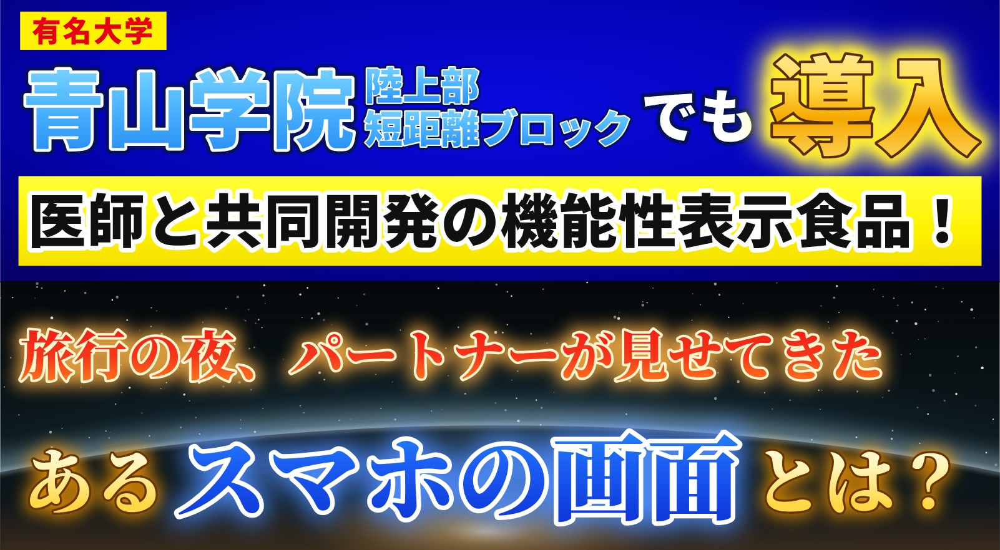

【PR】

家族やパートナーの
ふとしたひと言で
はじめて気づく「夜のこと」。
眠っている本人は
夜の自分に気づけません。
そういえば最近…
「夜中に何度も目が覚める」
「グッスリ寝た気がしない」
「一日中眠いと感じる」
毎日の睡眠に満足していますか？

高年齢になるほど困る
「睡眠の質の低下」
夜の生活音※が気になったら
眠りの深さ（睡眠の質）
にも目を向けてみませんか。
※寝付けないことによる生活音
ですが
有効な物は試してみたけど
全然グッスリ眠れない…
そこで！！
グッスリ眠れない人は
医師が奨める”睡眠改善法”
を必ず使ってください！
NHKにも出演する医師が奨める理由は
”ある成分”が
睡眠の質（眠りの深さ）の
改善に役立つからなんです。※
寝てる間に
どんどん睡眠の質を改善し※
朝スッキリ！
※GABAの睡眠の質の改善に役立つ効果
しかも
この睡眠改善法は販売開始から話題となり
医学誌や新聞に取り上げられることに！！

さらには
青山学院大学陸上部短距離ブロックでも
大活躍しているんです！

しかも！！
睡眠だけじゃありません！！
医師がこの睡眠改善法を推奨するのは
ある理由が隠されているからなんです！！

もちろん
口コミでも高評価！！
※イメージ
これは絶対に使うべき！！
1日あたりたったの132円で始められるので

あのグッスリと寝た後のスッキリ感を
取り戻したい方は
必ず目を通して正しい知識を身につけてください！
グッスリ眠れないのはなぜ？
カギは”自律神経”にあった
深い睡眠をとるには
脳や体に存在する”自律神経”
を調節する必要がある
ってご存知ですか？

自律神経には
交感神経と副交感神経
の2つがあり

交感神経が活発になることで
血圧まで上がり興奮状態に…。
いわば寝ている間に
体にエンジンがかかっている状態…

※エンジン音
だから
・すぐに目が覚めてしまう
・寝た気がしない
という事になってしまうんです。
しかし
この自律神経は自然と
年齢とともにドンドン崩れていく…

…と思われていましたが！！
そこで！！
医師が勧める「イビキュア」
を使ってみて欲しいんです！
睡眠改善が簡単になる！？
NHK出演医師が開発した『イビキュア』の秘密
NHK出演医師と共同開発された
「イビキュア」
で睡眠の質（眠りの深さ）を
見直してください！
※機能性表示食品（届出番号：J974）

実はこのイビキュアに含まれる
”ある特別な成分”が
脳や体の自律神経を調整してくれるんです！
その”ある成分”というのが
『高純度GABA』

発酵由来の従来原料は、GABAの純度が数％〜20%台程度ですが
イビキュアに含まれたGABAの純度はなんと98％！

納豆にすると
イビキュア1日分で約20パック分もの
GABAに相当するんです！
この高濃度のGABAが
交感神経
副交感神経
の両方にアプローチ！
GABAには、睡眠の質（眠りの深さ）の
改善に役立つ機能があります。

そんな、
機能性関与成分の「高純度GABA」を
そのまま使用しているんです！

しかも！！

このGABAには
血圧が高めの方の血圧を下げる機能も
あるんです！
血圧が高いと
交感神経も活発になり
ぐっすり眠ることが難しくなってきます。
しかし！
この高純度GABAは
血圧 ＆ 睡眠
にW (ダブル)で効果があるんです！


その効果のおかげで使用者も多く
多くの方も口コミでも大満足だと話題に！
★★★★☆ 4.5 / 5.0

40代 夫婦
長年の不満がやっと！！お医者さん推奨と言われ「大丈夫？」と思いつつ始めてみたらなんとホンモノでした！これで心おきなくグッスリ寝られると思うと…。とっても開放感を感じてます。
※PR※個人の感想です、効果効能を保証するものではありません
★★★★★ 5.0 / 5.0

30代 夫婦
休日もゆっくり寝れずにいつも体がダルくて…。「前みたいに泥のように寝たい！」と思って始めたイビキュアで本当に驚愕体験をしました！毎日ゆっくり眠れるのはイビキュアのおかげですね。
※PR※個人の感想です、効果効能を保証するものではありません
口コミでも
「イビキュアを始めたおかげ」
と助けられた人が多くいらっしゃいました。
その結果、
楽天でも『イビキュア』が第1位に！！

※楽天市場 その他部門 デイリーランキング（集計期間：2025年5月23日）
それもそのはず！
「イビキュア」は有名大学にも
導入されたホンモノの商品。
最近ではクリニックでも
最前列で取り扱いが開始されました！

ここまで効果があるのは
医師と共同開発した
処方だからなんです。
それは
9割以上の医師がイビキュアを推奨※
するほどの実力…！

※医師51名を対象としたアンケート（Dr's Review事務局調べ）。調査の詳細は画像内に記載。個人の感想であり、効果効能を保証するものではありません。
「イビキュア本当にすごい！」
その口コミが広まったことで
医学誌や新聞にも大きく掲載されることになったんです！

ただ当然
高機能だからこそ金額は高いです…

しかし、こんなスゴい
「イビキュア」を体感して欲しい！
そこで！！
見つけてきました！！！
今なら激安でゲットできる！
最安値で買える方法を大公開！
今なら激安でゲットできる！
最安値で買える方法を大公開！
なんと今なら！！
公式ページ限定で
たった2,980円
で購入できるんです！

が！！
もっと安くなります！！！
なんと、
この下にある10秒で終わるアンケートに
答えてもらうだけでOK！

すると公式ページで自動で
2,000円引きクーポンが適用され
980円
で購入できるようになるんです！

もちろん送料も無料！
さらにすごいのが
万一満足できなかった方のために
永久の返金保証まで付いてくる！※


支払いは商品の到着を確認してから後払いも可能です！

睡眠ストレスを抱えずに、快適な毎日を送るためにも
最安値でイビキュアを手に入れて睡眠の対策をしましょう！
 Q1 当てはまるものは？
Q1 当てはまるものは？

 Q2 イビキュアの魅力と感じた部分はどこですか？
Q2 イビキュアの魅力と感じた部分はどこですか？

 Q3 「イビキュア」を最安値で手に入れたいですか？
Q3 「イビキュア」を最安値で手に入れたいですか？

現在、特別キャンペーン実施中！
▼公式ページはこちら▼
※リンクを押して公式サイトに行かないときは
キャンペーン終了しています。
※追記 共同開発した医師のご紹介
※追記
共同開発した医師のご紹介
イビキュアは
医療法人社団五良会 理事長
五藤良将 医師と
共同開発した機能性表示食品です。
イビキュアには特許成分も使われています。
まずは
医師と共同開発したイビキュアを
試してみてください！

※PR
現在、特別キャンペーン実施中！
▼公式ページはこちら▼
※リンクを押して公式サイトに行かないときは
キャンペーン終了しています。

★★★★★ 5.0 / 5.0
48歳 男性
本当にイビキュアのおかげです！「また早朝に起きてしまうんじゃないか」と毎晩不安でした が、思い切って始めることができました。スッキリした朝を目指して頑張ります！
※PR※個人の感想です、効果効能を保証するものではありません